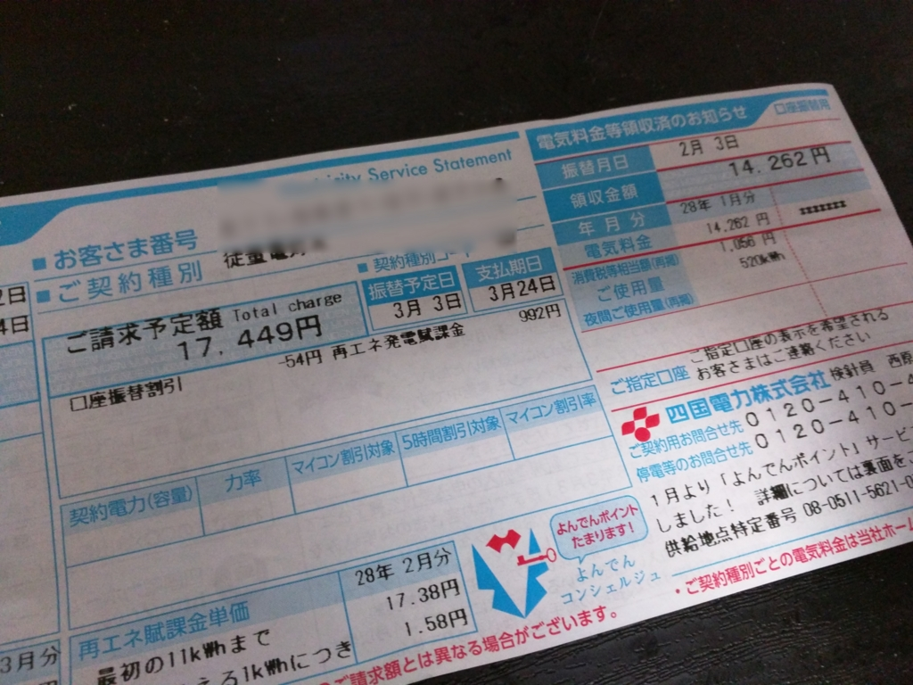

オイルヒーターで電気代爆死
公開日：
 OIL-001")
ΛzICHI オイルヒーター 強力10枚フィン 24時間タイマー 自動温度調節機能 (4?10畳用) OIL-001
- 出版社/メーカー: azone(エーゼットワン)
- メディア:
- この商品を含むブログを見る
1月末、オイルヒーターを買ってみた。某有名イタリアメーカーのではなく、1万円ぐらいの安いの。そういえば、こういうオイルヒーター、現場の詰め所とかにも置いてたなぁ。
オイルヒーターといえば、
- 駆動部が存在しないため静粛
- 電気暖房は燃料を燃焼させないため、空気を汚さない。乾燥もしない
- 容器内の難燃油は、密閉されているためメンテナンスする必要がない
- 輻射熱を利用した優しい暖かさ
といった利点を持つが、一方で
- 電気暖房のため、電気代が高くつく
- 温まるまでに時間がかかる
- 頻繁に部屋を出入りしたり、窓を大きく開けて換気するような環境には不向き
といった欠点を持つ。なかでも問題は電気代やな。
というわけで、1月と2月、3月請求分の電気代を去年（もっぱらエアコンを利用）と比較してみた。ちなみにウチは PC と照明を24時間つけっぱなしなので、最低でも電気代の請求は7,000円ぐらいになる。よって、それ以外が暖房代と考えていいかもしれない。

| - | 2015年 | 2016年 |
| 1月 | 12,960 | 14,262 |
| 2月 | 13,476 | 17,449 |
| 3月 | 10,846 | （未検針） |
実は1月の請求にちょっとビビッて、なるべく最低出力で頑張ってきたんだけど、それでも3月の請求は17,000円を超えた。去年（483kWh）に比べて、電気使用量も 628kWh に増加。これはちょっとやりすぎた気もする。
ただ、このオイルヒーターは安物なので、タイマーはついているが、室温によって出力調整してくれるといったエコ機能は備えていない。そういう機能があるオイルヒーターだったら、もう少し結果は違ったかも。1年で3ヵ月稼働するとして、ひと月2,000円ぐらい節約してくれれば、年に6,000円。5年使うつもりでいれば、高めのエコ機能付きオイルヒーターを買っても元を取れそうだな。
ちょっと失敗したかなーっていう気がしないでもないけれど、まぁ、いい勉強にはなった。来年はエアコンと加湿器にしてみよう。